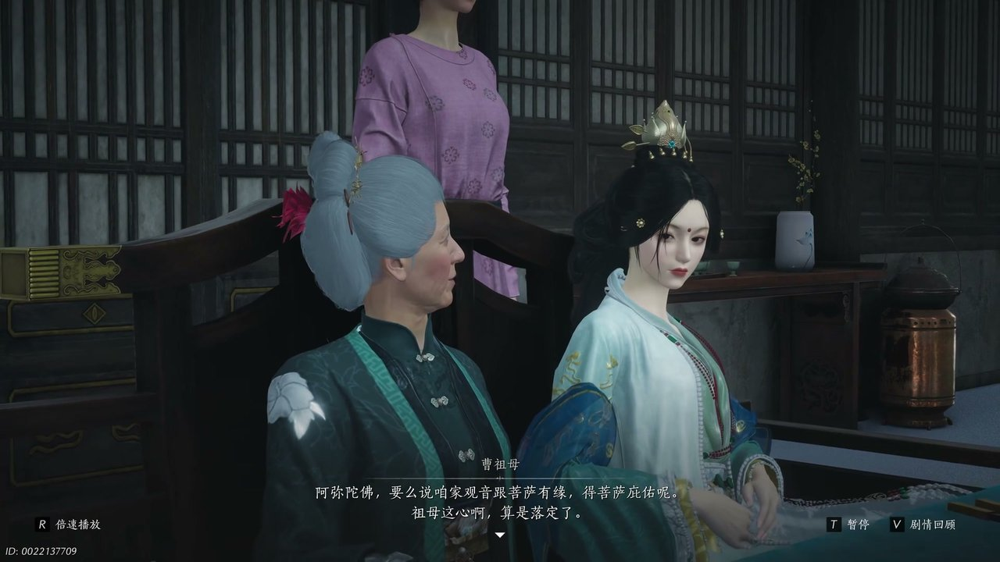
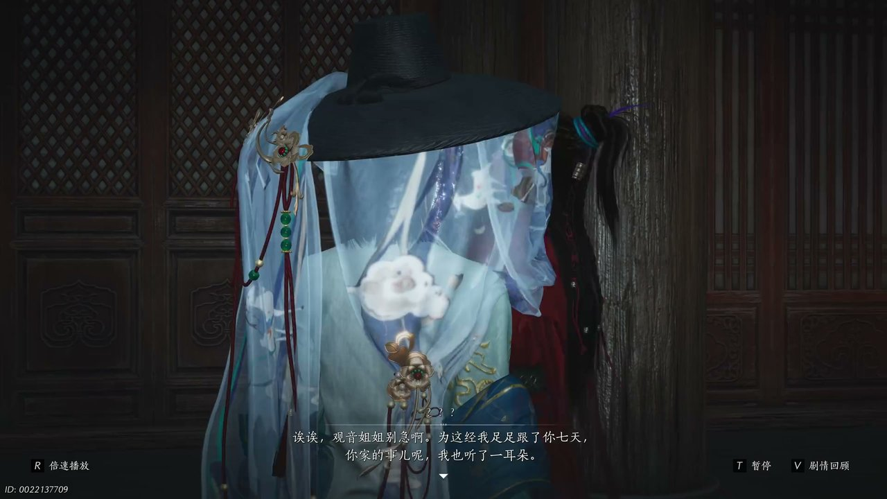
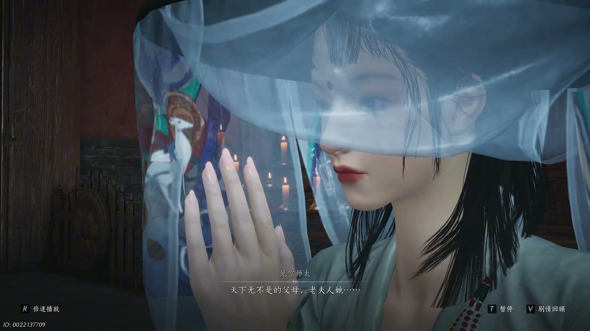
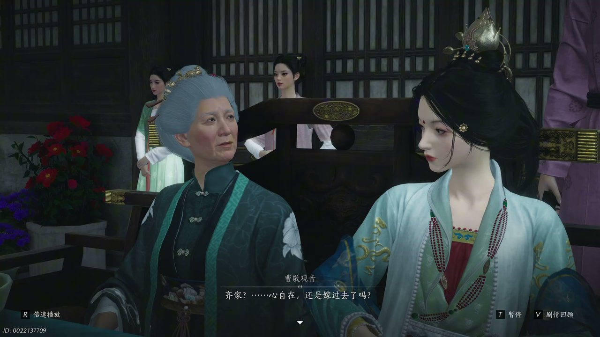
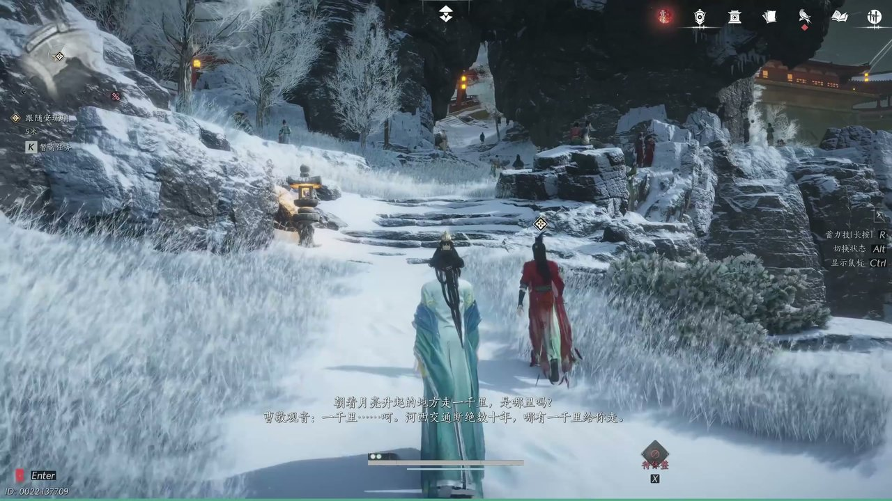
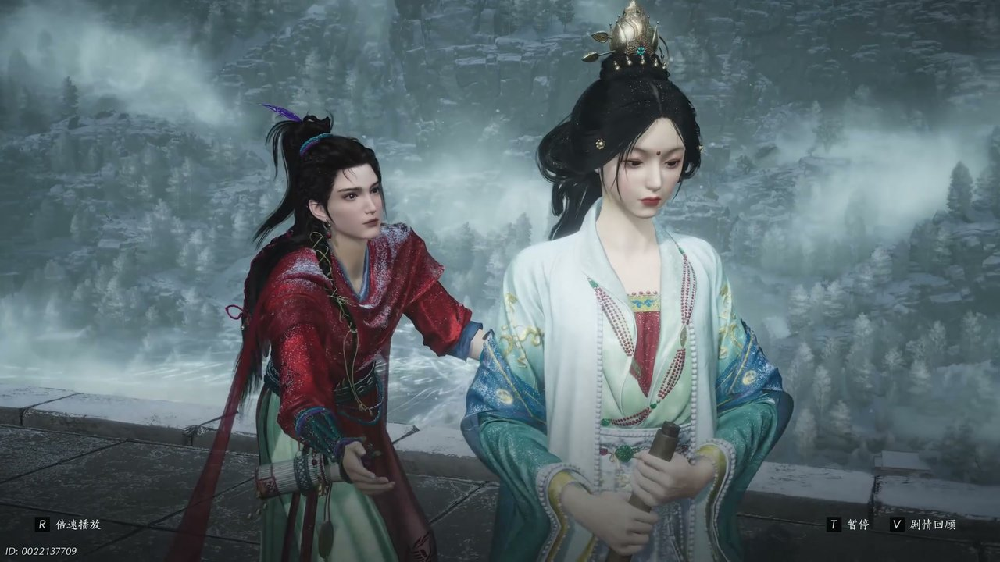

燕云背后的故事：第13集 凉州
燕云背后的故事：第13集 凉州

朋友们，上一集咱们说到——解开故土执念、廉道子抚琴、众人奔赴凉州，三处伏笔交织让前路满是未知。新来的朋友可能纳闷，一群漂泊之人告别荒漠客栈，为何要匆匆赶往凉州飞镜阁？简单说，众人一路追寻长安踪迹，凉州飞镜阁是眺望故土最重要的一处高台。可他哪知道，凉州城中古寺深藏隐秘，还有神秘身影早已等候多时。这不，一行人踏入凉州禅寺，见空师太正苦劝曹氏女娘曹敬观音离开寺院归家。

禅寺庭院暖阳洒落，青砖地面落满细碎槐叶，佛殿门帘被微风轻轻拂动。见空师太站在菩提树下，望着静坐抄经的曹敬观音缓缓开口：“女娘天生慧根，跟观音菩萨有缘，离了菩萨便要生病。”她伸手轻轻捋动僧袍袖口，指尖落在一旁堆放的佛经之上，继续规劝对方自幼长于寺院，习惯青灯古佛，可青春易逝，总要走入红尘历练一番。曹敬观音垂着眼帘，笔尖不停在纸上书写经文，发丝垂落在脸颊两侧，神色平静无波。她抬手将一支家人送来的木梳推到一旁，轻声说道：“我留在寺中抄经，是为解家中祖母治病，抄完后我自会回家。”见空师太满脸无奈，叹道大波若经纵然珍贵，终究是死物，活生生的人才最为重要，劝她莫要自我煎熬。殿外钟声缓缓响起，打破了两人之间沉寂的氛围。

入夜之后禅房变得静谧，烛火摇曳照亮满桌血抄经书，一道红衣身影悄然潜入屋内，伸手拿走了曹敬观音正在抄写的经文。曹敬观音猛然抬头，厉声呵斥：“小贼把经书还我。”红衣之人安琉璃倚在梁柱之上，嘴角带着笑意，慢悠悠开口：“我足足跟了你七天，你家的事呢我也听了一耳朵。”他脚尖轻点地面，身形轻盈地绕着桌案走动，细数曹敬观音不愿接受家中安排的婚事，借抄经为由躲在寺院之中的缘由。曹敬观音面露愠色，起身想要夺回经书，安琉璃却步步后退，还道出她借着抄经之机，偷偷记下河西地图的秘密。曹敬观音神色一怔，没想到自己隐秘的举动早已被对方察觉，禅房之外传来小僧尼呼喊抓贼的声响，整个寺院瞬间变得喧闹起来。

寺中慌乱平息之后，见空师太再次找到曹敬观音，神色恳切地劝说道：“天下无不是的父母，老夫人拳拳之心呐。”师太走到窗边望向院落，阳光透过窗棂落在她的僧衣之上，讲述曹家老夫人心疼孙女，明知她不喜婚事，依旧为她谋划终身归宿，只盼她往后能有安稳依靠。曹敬观音坐在蒲团之上，指尖摩挲着泛黄的经卷，心中满是纠结。安琉璃躲在佛龛后方，静静听着二人对话，趁着师太不备，又悄悄留下一卷未抄完的经文。见空师太见状无奈摇头，叮嘱曹敬观音尽快离开寺院，免得引来更多事端，还提醒她小心四处游荡的红衣小贼，不要被其扰乱心神。

曹敬观音辞别禅寺，回到曹家府邸，庭院之中戏班子正在表演剧目，曹祖母端坐主位神色欣慰。曹敬观音走上前轻声安抚：“祖母莫要伤神，齐角心自在还是嫁过去了吗。”曹祖母握着她的手，指尖布满皱纹，温柔地劝说孙女年纪渐长，不该整日埋首经书之间，家中为她挑选的夫婿相貌端正、懂得体恤他人，是一门难得的好亲事。曹家老爷满面喜色，高声吩咐下人重赏戏班，扬言自家女儿身份尊贵，日后还有成为王妃的可能。戏台之上走索艺人身姿轻盈，在绳索之上翻腾跳跃，引得众人连连惊叹，安琉璃混在杂耍班子里，目光紧紧锁定在曹敬观音身上，伺机再次接近。

安琉璃借着表演法术的机会，单独见到曹敬观音，自信地说道能带她去往千里之外的长安。曹敬观音满脸质疑：“河西交通断绝数十年，哪有一千里跟你走。”安琉璃微微一笑，描绘出长安繁华盛景，青牛白马穿梭街巷，高楼直插云霄，站在明月楼顶伸手便能触碰明月，还称这些景致是自己父亲笔下的诗文。曹敬观音心中动摇，长久困于深宅古寺，她早已向往外面的世界，当即提出想要跟着安琉璃一同前往。安琉璃神色略显迟疑，让她在原地等候，自己前去准备施展法术的物件，还叮嘱她不可将此事告知旁人，夜色渐浓，花灯渐渐亮起，凉州城中处处灯火璀璨。

安琉璃终于道出真相，取出曹敬观音用血抄写的经文解释缘由：“血经难得，我那神通非得靠它才成呢。”他带着曹敬观音来到一处隐秘居所，屋内躺着一位神色萎靡的三娘，三娘因心上人背弃婚约一病不起。安琉璃走遍各处寻访良方无果，唯有曹敬观音指尖鲜血抄写的经文拥有特殊力量，能够化解三娘的心结。曹敬观音心生怜悯，主动提出将血经赠予对方，还愿意一同施法相助。经文被焚烧成灰烬，混入清水之中喂三娘服下，三娘陷入幻境，见到了背弃自己的故人，情绪激动难以平复。曹敬观音出言点醒幻境之中的三娘，告知眼前之人只是虚妄皮囊，真正的故人早已逝去，三娘终于放下执念，心神渐渐安定下来。
这一集看下来，我最大的感受是困于方寸之人，终会因机缘踏出围城。上一集里我们只知道奔赴凉州、飞镜阁望远、众人各怀心事三条线索，到了这一集，我们知晓曹氏女娘避世古寺、红衣盗贼身怀秘术、血经拥有奇效三条新线索。安琉璃真正的目的究竟是什么？长安盛景是否真实存在？花灯之约两人能否如期相见？所有线索尽数收拢，曹敬观音心境大变，决意离开曹家跟随安琉璃探寻未知世界。下一集，凉州花灯盛会两人如约相见。有人好奇花灯之下还会出现哪些故人幻影？安琉璃口中的长安之路能否顺利开启？评论区聊聊你的猜想，持续关注，咱们下一集漫步凉州灯会，共赴一场远方之约。
关于我们
📱 公众号名称：三天游戏
✍️ 作者：曾三天
扫码关注公众号，获取每日最新资讯

商务合作与版权
商务合作 / 内容投稿 / 品牌推广
请关注公众号「三天游戏」后台留言联系
版权声明：本文由作者整理，转载需注明出处。